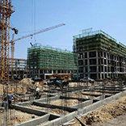
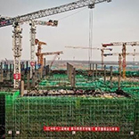

|
|
 |
|
 |
正在直播
直播｜何家乡何家村拱墅区山海协作千亩油茶林道路硬化工程
何家村通往油茶林的道路，原来是机耕路，路面坑洼不平，村民进出不便。2019年拱墅区投入资金开发提升油茶林，其中道路硬化约需70万元。
云监督能够清晰展示道路施工的现场、道路宽度、路基稳定性、混凝土质量和工程进度等情况。让大众第一时间真切地了解到项目实施情况。
直播｜建德市建筑工地在线监控远程监督
“以前建筑工地大检查，检查人员跑腿。”
建筑工地专项检查和日常巡查是住建部门的重点业务，但随着建设项目与日俱增，而监管部门人手不足，极易出现检查“盲点”，而“云上”监管的出现解决了这一问题。

直播｜后疫情时代：“云观摩”助力工程质量安全标准化工地建设
自治区住房和城乡建设厅在喀什市、乌鲁木齐市的三个施工项目现场召开工程质量安全标准化工地“云观摩”活动。
全区14个地(州、市)住房城乡建设主管部门以及辖区的建筑企业、房地产企业的约3万余人在线观看了直播活动。
直播回放

直播｜国网新疆物资公司：云监督助力农配网工程建设
国网新疆物资公司运用网络在线“质量云监督”，配合物资质量入厂抽检，顺利完成了上半年三批农配网水泥电杆质量检验工作。
有效保障农配网工程建设的顺利实施，对助力“三区两州”脱贫攻坚战起到了积极作用。
直播｜霸州市工地安全监督
高科技智能化的管控措施。
加大对施工现场起重机械设备全天候、全运行的实时数据监测，做到规范操作流程，及时发现设备稳定隐患，杜绝建筑起重机械引发伤亡事故，提高管理水平和管控力度，充分发挥“监控平台”的作用，做到智慧云监管。
直播｜太仓市重点建设项目实时动态
项目的基本情况、开工情况、审批情况一目了然。
通过平台可以随时查看重点项目推进情况，找准推进中存在的问题，及时督促解决，确保项目按时序推进。